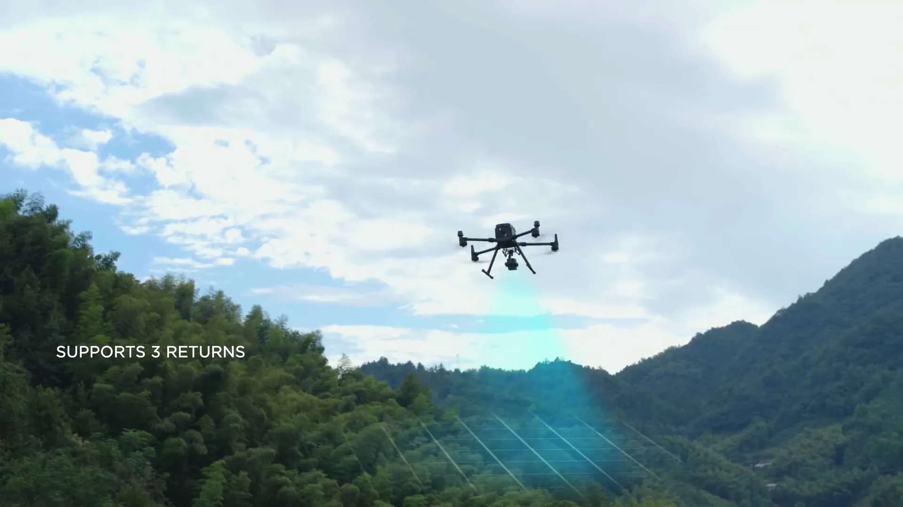

Levantamiento Aéreo
con Lidar en Costa Rica
Especialistas en levantamientos aéreos con drones Lidar, mapeo topográfico, video y fotografía aérea. Datos con precisión centimétrica para inmobiliario, construcción y agricultura.
Nuestros Servicios
Mapeo Lidar Aéreo

Nuestros drones Lidar usan escaneo láser para capturar datos del terreno con precisión centimétrica — penetrando dosel forestal para mapear la verdadera superficie del terreno.
Conoce más sobre LidarVideo y Fotografía Aérea

Video aéreo 4K profesional y fotografía aérea de alta resolución para listados inmobiliarios, documentación de construcción, marketing de propiedades y contenido promocional en Costa Rica.
Cotizar Video AéreoGeoposicionamiento GPS

Usamos una estación base GPS RTK para determinar las coordenadas geográficas exactas de cualquier ubicación — esencial para levantamientos de linderos y topográficos precisos.
Conoce más sobre GPSEl Futuro del Levantamiento Aéreo
Ofrecemos la última tecnología en equipos de drones para levantamientos aéreos, facilitando la captura de terrenos de cualquier tamaño de forma muy sencilla y automatizando el proceso para hacerlo repetible. Podemos escanear cualquier entorno y ofrecerte un renderizado 3D con precisión centimétrica que puede usarse para medir, mapear y modificar en el mundo virtual.
Flujo de Trabajo
Planificación Virtual de Misión

Nuestro software de planificación nos permite crear un plan virtual para visualizar la ruta de vuelo del dron y el tiempo de operación
Ejecución de la Misión de Vuelo

Luego enviamos nuestro equipo para ejecutar la misión planificada y capturar datos fotográficos y Lidar para crear entornos de mapeo 3D con precisión centimétrica
Capturar, Analizar, Visualizar

Después de capturar todos los datos, los analizamos con nuestro software para crear fotogrametría 3D y mapas topográficos de alta calidad
Comenzar es
muy fácil con nosotros
Para comenzar simplemente haz clic en el botón de abajo para llenar nuestra solicitud de servicio en línea con tu información, la ubicación y el tamaño del proyecto, y te enviaremos una cotización por correo.
OBTENER COTIZACIÓN AHORA
Paso 1: Solicitar una cotización
Solo toma 5 minutos llenar nuestro formulario en línea y recibir una cotización gratuita del proyecto que estás enviando

Paso 2: Seleccionar fecha y firmar contrato
Una vez acordada la cotización, puedes indicar la fecha de ejecución. Luego creamos un contrato y factura que se envía por correo, y se requiere un depósito del 50% al firmar.

Paso 3: Ejecución de misión y procesamiento de datos
Después de firmar el contrato, la fecha queda confirmada y la misión se ejecutará siempre que el clima lo permita. Una vez capturados los datos del mapa, se vence el saldo del contrato. Al recibir el pago, los datos del mapeo se envían al cliente.

Mapeo de Precisión Centimétrica
El Zenmuse L1 integra un módulo Lidar Livox, una IMU de alta precisión y una cámara con sensor CMOS de 1 pulgada en un gimbal estabilizado de 3 ejes.
3 Retornos
Cobertura láser Lidar
240,000 pts
Tasa de puntos Lidar
¿Quieres hablar con una persona real y hacernos preguntas?
La tecnología de drones Lidar es nueva y la mayoría de las personas están comenzando a conocerla. Somos expertos en nuestro dominio desde hace 7 años y con gusto respondemos cualquier pregunta o inquietud que tengas antes de trabajar con nosotros.
¡HABLEMOS AHORA!
Orientados a resultados

Flujo de Trabajo Autónomo

Equipo Experto de Pilotos

Levantamiento Preciso y Exacto
Contáctanos
Queremos que trabajar con nosotros sea fácil y sencillo, por eso te damos 2 opciones. Obtén una cotización gratuita en línea llenando nuestro formulario, o agenda una llamada para que nos comuniquemos contigo cuando quieras
Lo que Nuestros Clientes Dicen
⭐⭐⭐⭐⭐ 5.0 de 5 · 25 reseñas en Google
★★★★★
"Drone Survey Costa Rica hizo un excelente trabajo con Lidar aéreo para uno de mis listados. Profesionales, confiables y fáciles de trabajar. La calidad del levantamiento fue excelente — datos precisos que fueron increíblemente útiles."
Travis Comstock
Agente Inmobiliario · Costa Rica
★★★★★
"He usado Drone Survey Costa Rica durante los últimos 2 años en más de 20 ocasiones. Muy profesional y la cantidad de datos que obtienes del Lidar para planificación de tierras, ingeniería y diseño es increíble. La mejor herramienta que un desarrollador o propietario podría usar."
Javier Mora Balma
Desarrollador de Tierras · Costa Rica
★★★★★
"Muy fácil de trabajar y muy profesional. Reservamos a través de su sitio web, recibimos una cotización por correo, y llegaron a volar el dron en nuestra nueva propiedad. Pudimos descargar todos nuestros archivos fácilmente. Excelente servicio — los recomendaría a todos."
Nick Iversen
Propietario de Propiedad · Local Guide
Industrias a las que Servimos en Costa Rica
Nuestros servicios de levantamiento aéreo son confiables para profesionales en las principales industrias de Costa Rica.
🏡 Levantamientos Inmobiliarios
Modelos 3D de propiedades, mapas topográficos y levantamientos de linderos para transacciones de tierras.
🏗️ Monitoreo de Construcción
Seguimiento de progreso, cálculo de volúmenes y verificación de condiciones as-built en tu sitio de construcción.
🌱 Mapeo Agrícola
Análisis de terreno, planificación de drenaje y monitoreo de cultivos para fincas y plantaciones de Costa Rica.
🎬 Video y Fotografía Aérea
Video aéreo 4K y fotografía aérea para marketing de propiedades, documentación de construcción y promociones.
Preguntas Frecuentes
¿Cuánto cuesta un levantamiento aéreo con dron en Costa Rica?
Nuestros levantamientos comienzan en $1,000 USD para hasta 5 hectáreas — esto incluye el vuelo, estación base GPS, procesamiento completo de datos y todos los entregables. Cada hectárea adicional es $80 USD. Se aplican tarifas de viaje desde San José. Proyectos mayores a 100 hectáreas califican para precios especiales. Obtén una cotización gratuita en minutos.
¿Cuál es la diferencia entre Lidar y fotogrametría?
Lidar usa pulsos láser y puede penetrar vegetación densa para mapear el terreno debajo — ideal para el terreno boscoso de Costa Rica. Fotogrametría usa fotos aéreas superpuestas para crear modelos 3D y es económica para tierra abierta. Ofrecemos ambos y recomendaremos la mejor opción para tu proyecto.
¿Qué tan preciso es un levantamiento aéreo en Costa Rica?
Nuestros levantamientos aéreos usando el Lidar DJI Zenmuse L1 logran precisión a nivel centimétrico (típicamente 1-3 cm horizontal, 2-5 cm vertical). Combinado con nuestra estación base GPS RTK, entregamos datos de levantamiento profesional que cumplen estándares de ingeniería y legales en Costa Rica.
¿Cuánto tiempo toma un levantamiento aéreo?
La captura de datos en el terreno típicamente toma 2-8 horas dependiendo del tamaño y terreno. El procesamiento de datos y entrega de mapas 3D e informes toma 3-7 días hábiles después de la misión de vuelo.
¿Levantan todas las áreas de Costa Rica?
Sí — levantamos todas las regiones de Costa Rica incluyendo San José, Guanacaste, Valle Central, Caribe, Zona Sur y áreas remotas. Manejamos todos los permisos de vuelo DGAC requeridos para la ubicación de tu proyecto.